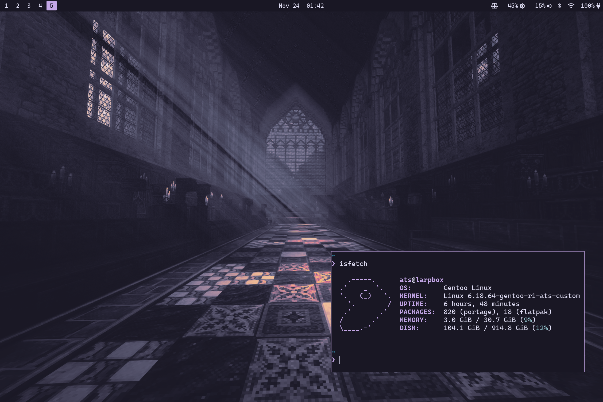

Rice 🐧
- Gentoo Linux on a custom kernel.
- Neovim config.
- A custom fetch script, based on ufetch.
_________________________________________
/ I'm currently running Gentoo Linux on a \
| custom, stripped-down kernel (15.6 MB |
| bzImage, vs 23.1 MB for the stock |
\ Gentoo kernel) /
-----------------------------------------
\ ^__^
\ (oo)\_______
(__)\ )\/\
||----w |
|| ||
isfetch: my custom fetch, based on ufetch
.-----. ats@larpbox
.` _ `. OS: Gentoo Linux
`. (_) `. KERNEL: Linux 6.18.64-gentoo-r1-ats-custom
`. / UPTIME: 0 hours, 3 minutes
.` .` PACKAGES: 820 (portage), 18 (flatpak)
/ .` MEMORY: 0.8G / 30.7G (3%)
\____.-` DISK: 104.1 GiB / 914.8 GiB (12%)
Current Desktop

My old EndeavourOS setup from May 2026
Fun fact: This website uses the same colorscheme as my current Linux setup! (Rosé Pine)